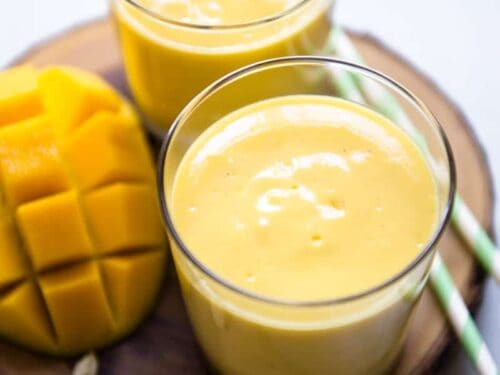

Mango Lassi Recipe

Description
Mango lassi is a delicious creamy drink consisting of mango, yogurt, and milk.
Ingredients
- 2 (15.25 ounce) cans mango pulp, or mango slices with juice
- ½ cup plain yogurt
- ¼ cup milk
- 2 cups ice cubes
Steps
- Pour mangos, yogurt, milk, and ice into the bowl of a blender. Blend until smooth.